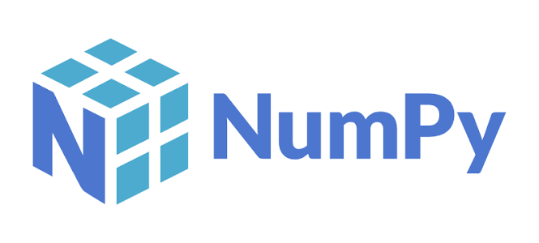
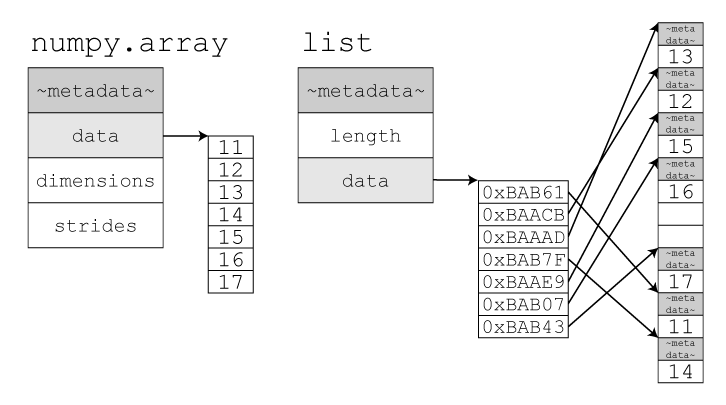
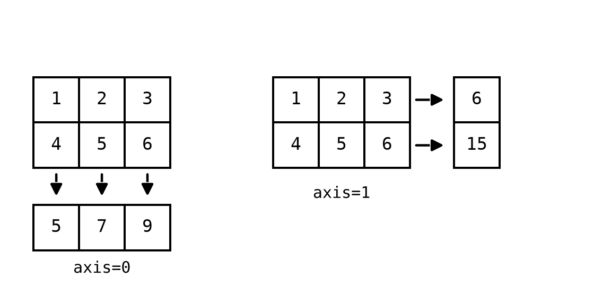
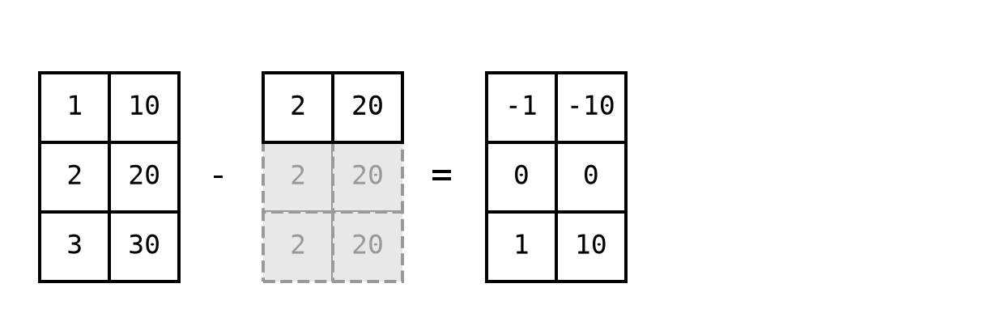
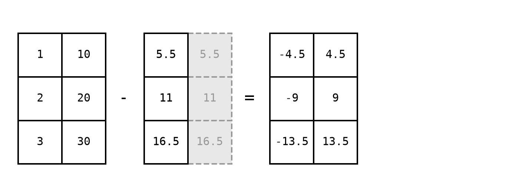
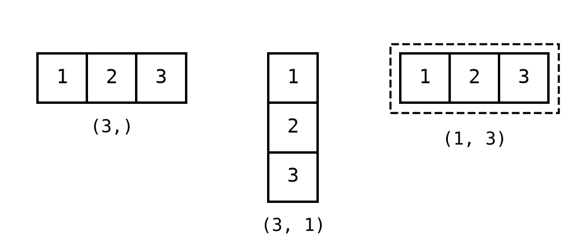

NumPy کتابخانه اصلی محاسبات عددی در پایتون است. هسته آن یک ساختار داده به نام ndarray (آرایه چند بعدی) است که تمام عملیات ریاضی و آماری روی آن انجام میشود.
این کتابخانه در سال ۲۰۰۶ توسط Travis Oliphant با ادغام دو پروژه قدیمیتر به نامهای Numeric و Numarray شکل گرفت، و از همان زمان به استاندارد آرایه در پایتون تبدیل شد.




اگر هیچ جفت بعدی سازگار نبود، NumPy بهجای حدس زدن، خطا میدهد.
